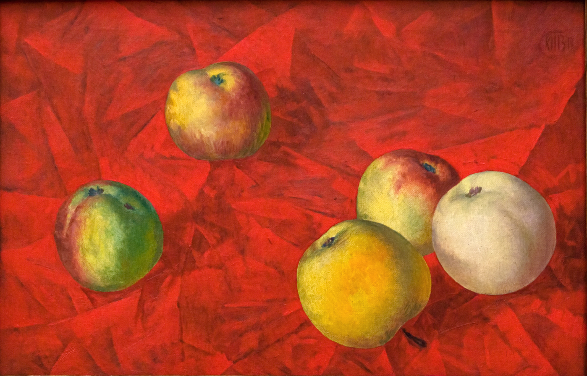

Угрюмо шмель гудит, толкаясь по стеклу...
В окно зарница глянула тревожно...
Притихший соловей в сирени на валу
Выводит трели осторожно.
Гром, проворчав в саду, скатился за гумно;
Но воздух меркнет, небо потухает...
А тополь тянется в открытое окно
И ладаном благоухает.
* * *
На окне, серебряном от инея,
За ночь хризантемы расцвели.
В верхних стеклах - небо ярко-синее
И застреха в снеговой пыли.
Всходит солнце, бодрое от холода,
Золотится отблеском окно.
Утро тихо, радостно и молодо.
Белым снегом все запушено.
И все утро яркие и чистые
Буду видеть краски в вышине,
И до полдня будут серебристые
Хризантемы на моем окне.
Иван Бунин
Отрывок из рассказа Антоновский яблоки
Помню раннее, свежее, тихое утро... Помню большой, весь золотой,
подсохший и поредевший сад, помню кленовые аллеи, тонкий
аромат опавшей листвы и – запах антоновских яблок, запах мёда
и осенней свежести. Воздух так чист, точно его совсем нет,
по всему саду раздаются голоса и скрип телег.
Это тархане, мещане-садовники, наняли мужиков и насыпают
яблоки, чтобы в ночь отправлять их в город, – непременно в ночь,
когда так славно лежать на возу, смотреть в звёздное
небо, чувствовать запах дёгтя в свежем воздухе
и слушать, как осторожно поскрипывает в
темноте длинный обоз по большой дороге. Мужик,
насыпающий яблоки, ест их сочным треском одно за
одним, но уж таково заведение – никогда
мещанин не оборвёт его, а ещё скажет:
– Вали, ешь досыта, – делать нечего! На сливанье все мёд пьют.

Петров-Водкин Кузьма Яблоки
И прохладную тишину утра нарушает только сытое
квохтанье дроздов на коралловых рябинах в чаще
сада, голоса да гулкий стук ссыпаемых в меры и
кадушки яблок. В поредевшем саду далеко
видна дорога к большому шалашу, усыпанная
соломой, и самый шалаш, около которого
мещане обзавелись за лето целым хозяйством.
Всюду сильно пахнет яблоками, тут – особенно.
* * *
На даче тихо, ночь темна,
Туманны звезды голубые
Вздыхая, ширится волна,
Цветы качаются слепые -
И часто с ветром, до скамьи,
Как некий дух в эфирной плоти,
Доходят свежие струи
Волны, вздыхающей в дремоте.
Какая радость — существовать! Только видеть, хотя бы видеть лишь один этот
дым и этот свет. Если бы у меня не было рук и ног и я бы только мог сидеть
на лавочке и смотреть на заходящее солнце, то я был бы счастлив этим. Одно
нужно только — видеть и дышать. Ничто не дает такого наслаждения, как краски…
И.А.Бунин